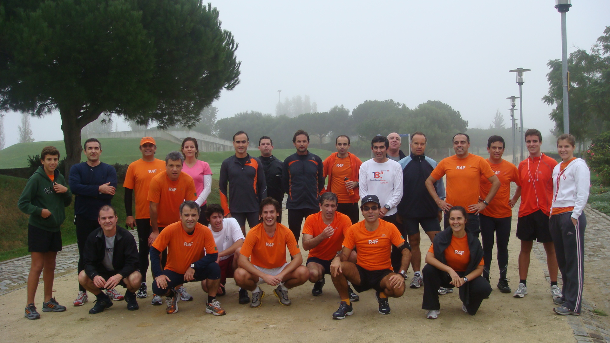
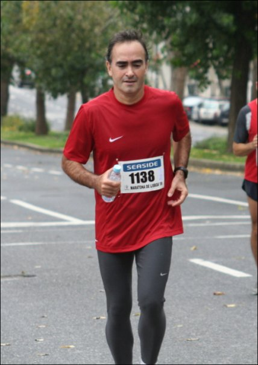
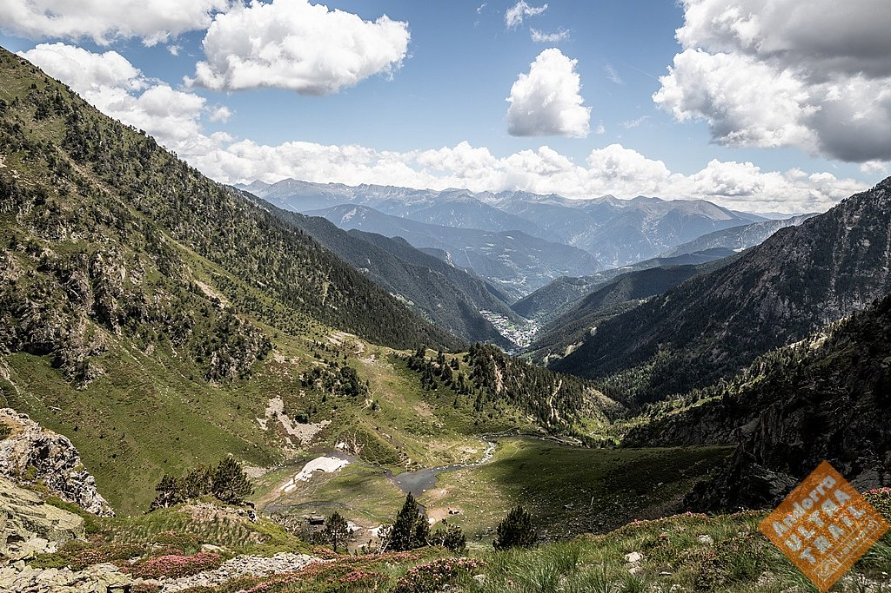

RUN 4 FUN · 20 anos · memória · entrevista
Notas preparatórias para a entrevista comemorativa dos 20 anos RUN 4 FUN.
A propósito da preparação dos vídeos comemorativos dos 20 anos dos RUN 4 FUN, comecei a organizar algumas memórias pessoais que poderão servir de base à entrevista. A ideia é simples: uma conversa conduzida pelo João Ralha, gravada em vídeo, divulgada e arquivada conforme a Direção entender, com um conjunto limitado de perguntas e uma duração desejada entre 10 e 15 minutos.
Mas, como quase sempre acontece quando se começa a puxar por um fio da memória, depressa se percebe que não estamos apenas a falar de datas, provas, direções ou classificações. Estamos a falar de pessoas, de encontros, de primeiras vezes, de provas que nos marcaram, de clubes que resistem ao tempo e de uma camisola laranja que, para muitos de nós, se tornou uma espécie de segunda pele desportiva.
A proposta inicial aponta para entrevistas a 24 ou 36 atletas, incluindo fundadores, coautores do livro e membros de Direção. A publicação poderia decorrer ao longo de um período alargado, com uma entrevista por mês, começando em fevereiro de 2026 e prolongando-se até julho de 2028, ano dos 20 anos do clube.
O guião deverá ter, no máximo, 11 perguntas. A ideia não é fazer uma biografia exaustiva de cada atleta, mas recolher memórias significativas, episódios representativos e pequenos retratos humanos da comunidade RUN 4 FUN.
Esta última pergunta parece-me claramente uma pergunta geral. Continuar ou não continuar a correr, e sobretudo explicar porquê, diz muito sobre a relação de cada um com a corrida, com o clube e com a passagem do tempo.
Pensando na minha própria entrevista, a linha narrativa que me parece mais natural é esta: a entrada no clube pela mão do João Ralha, a estreia com ligação aos RUN 4 FUN na Maratona de Lisboa, a passagem para os ultra trails, a prova extrema em Andorra, a experiência associativa nas Direções de 2020 e 2023, uma história divertida vivida em contexto de prova, e finalmente a ideia de legado.
Mais do que apresentar um currículo desportivo, faria sentido contar uma história de pertença. Porque, no fundo, a minha história nos RUN 4 FUN começa com pessoas concretas: o João, a Luísa, os companheiros de treino, as primeiras provas, os amigos que foram aparecendo ao longo do caminho.

O meu primeiro treino com os RUN 4 FUN foi em 2009, no Open Day realizado na zona da Expo, em 28 de novembro. Recordo esse momento como uma espécie de porta de entrada para uma nova forma de viver a corrida.
Havia frio, nevoeiro, caras novas e aquele ambiente próprio dos grupos que correm porque gostam, mas que ao mesmo tempo levam a corrida suficientemente a sério para aparecerem, treinarem, puxarem uns pelos outros e criarem rotinas. A certa altura, correr em grupo deixa de ser apenas correr acompanhado. Passa a ser pertencer a uma comunidade.
Se tivesse de resumir esse primeiro treino numa frase, diria isto: foi o dia em que percebi que correr com outros muda a experiência da corrida.
O meu padrinho RUN 4 FUN é o João Ralha. E isso torna esta entrevista ainda mais simbólica, porque a proposta é precisamente que seja o João a conduzir estas conversas.
O João não foi apenas alguém que me apresentou ao clube. Foi uma presença importante na minha primeira Maratona com ligação aos RUN 4 FUN e uma companhia que ficou associada, desde o início, à minha história dentro do grupo.
Quando penso na minha entrada nos RUN 4 FUN, penso inevitavelmente no João. E isso é bonito, porque muitos clubes constroem-se assim: não por grandes proclamações, mas por pequenos gestos de acolhimento, por alguém que nos acompanha, que nos integra e que nos faz sentir que pertencemos.

A primeira corrida que considero verdadeiramente marcante nesta ligação aos RUN 4 FUN foi a Maratona de Lisboa, em 2009. Foi também a minha primeira Maratona.
A imagem diz muito: ainda sem a camisola laranja que viria depois a tornar-se tão simbólica, mas já no início de um caminho que me levaria aos RUN 4 FUN, às corridas em grupo, às provas longas e ao ultra trail.
Fui acompanhado pelo João e pela Luísa Ralha, e essa memória continua muito presente. A primeira metade da prova ficou associada à companhia do João. Passar a meia maratona com ele deu-me confiança, tranquilidade e uma sensação de que aquilo era possível.
Depois veio a parte que tantos maratonistas conhecem: o famoso muro. No meu caso, apareceu a cerca de sete quilómetros da meta. A partir daí, a Maratona deixou de ser apenas uma corrida e passou a ser uma conversa dura comigo próprio.
A minha primeira Maratona ensinou-me que os 42 quilómetros não se correm apenas com as pernas. Correm-se com memória, companhia, teimosia e alguma humildade.

Com a camisola RUN 4 FUN, a prova que considero mais desafiante foi o Andorra Ultra Trail, na distância Ronda dels Cims: cerca de 170 quilómetros, aproximadamente 13.500 metros de desnível positivo e um terreno particularmente duro.
Mais do que a distância, o que torna uma prova destas memorável é o conjunto: altitude, pedra, noite, sono, dor, alimentação, estratégia, solidão, companhia, medo, euforia e a necessidade permanente de negociar connosco próprios.
Numa prova desta dimensão, não se trata apenas de correr. Trata-se de gerir a cabeça, aceitar a lentidão, resolver problemas, manter a lucidez, comer quando não apetece, continuar quando tudo no corpo sugere parar e, acima de tudo, conservar uma razão íntima para seguir em frente.
O Andorra Ultra Trail não foi apenas uma prova longa. Foi uma travessia física e mental, daquelas que nos obrigam a descobrir que tipo de conversa conseguimos ter connosco quando já quase tudo nos falta.
Se me perguntarem por uma história divertida vivida em contexto de prova com ligação aos RUN 4 FUN, uma das melhores é, sem dúvida, a Maratona de Sevilha de 2012. A prova correu bem, mas a viagem teve de tudo: autocarro errado, telemóvel na sanita, recorde pessoal por um segundo, cervejas “isotónicas” e até um atleta invisual e o seu guia que desapareceram durante horas depois de se perderem no percurso.
A aventura começou logo antes da partida para Sevilha. Eu e o Carlos entrámos num autocarro convencidos de que era o nosso. Sentámo-nos confortavelmente, prontos para seguir viagem, até percebermos que afinal aquele era o autocarro de outro grupo. Foi preciso ligar ao Renato Velez, que estava em Setúbal, e acelerar de carro para apanhar o autocarro certo.
Ou seja, antes da Maratona já tínhamos feito uma espécie de aquecimento logístico. Como muitas vezes acontece nestas viagens, a prova oficial tinha 42,195 km, mas a aventura começou muito antes da linha de partida.
Depois, durante a noite, para não acordar os colegas de quarto, resolvi usar o telemóvel como lanterna. Péssima ideia. O telemóvel caiu-me dentro da sanita — e, claro, era o meu único despertador. Felizmente, a chamada de despertar do hotel funcionou e consegui chegar à partida.
A Maratona acabou por correr muito bem. Fiz 2:57:57 e melhorei o meu recorde pessoal oficial por apenas um segundo. Uma melhoria à Sergey Bubka: pouco de cada vez, mas conta.
Depois da prova houve banho, convívio e umas cervejas “isotónicas” bem geladas, porque também é preciso recuperar com método. Pelo caminho, ainda me cruzei com o João, a Luísa Ralha e a Cristina Caldeira, que iam acompanhar os últimos quilómetros de companheiros RUN 4 FUN. Mais tarde, o almoço com o grupo laranjinha fechou a experiência como deve ser.
Mas a história ainda não tinha acabado. Faltava chegar um atleta invisual e o seu guia. Tinham passado do tempo limite, perderam-se depois do quilómetro 32 e acabaram por fazer mais quilómetros do que a própria Maratona antes de serem recolhidos pela organização.
A Maratona de Sevilha de 2012 foi uma daquelas histórias em que se percebe que, com os RUN 4 FUN, a prova nunca são só os 42 quilómetros. A aventura começa antes, continua depois e, anos mais tarde, ainda dá vontade de rir.
Versão curta para responder em vídeo:
“Uma das histórias mais divertidas foi a Maratona de Sevilha de 2012. A aventura começou logo antes da viagem: eu e o Carlos entrámos num autocarro convencidos de que era o nosso, sentámo-nos confortavelmente, e só depois percebemos que era o autocarro errado. Tivemos de ligar ao Renato Velez, que estava em Setúbal, e ir de carro apanhar o autocarro certo. Ou seja, antes da Maratona já tínhamos feito uma espécie de aquecimento logístico.
Depois, durante a noite, para não acordar os colegas de quarto, resolvi usar o telemóvel como lanterna. Péssima ideia: o telemóvel caiu-me dentro da sanita. E claro, era o meu único despertador. Felizmente a chamada do hotel funcionou.
A prova correu bem: bati o meu recorde pessoal por um segundo, uma melhoria à Sergey Bubka. Depois ainda houve cervejas ‘isotónicas’ e a história inacreditável de um atleta invisual e do seu guia que desapareceram durante horas porque se perderam no percurso. Foi uma daquelas viagens em que se percebe que, com os RUN 4 FUN, a prova nunca são só os 42 km.”
Fiz parte da Direção de 2020, uma Direção muito peculiar. Tínhamos ideias, planos e vontade de concretizar projetos presenciais, mas em março surgiu em Portugal a pandemia de COVID-19 e fomos todos mandados ficar em casa.
Esse contexto está bem documentado no meu post “COVID-19: Distanciamento Social — Dia #31” , que não é propriamente um texto sobre a Direção, mas é um testemunho muito direto do ambiente em que vivíamos.
Ainda no início de março organizei um treino Heróis do Mar do núcleo da Expo. Poucos dias depois, já se cancelavam treinos e eventos, e a corrida passava a existir entre restrições, passadeiras, saídas curtas e iniciativas à distância.
Um clube de corrida vive de treinos, encontros, provas, convívio, abraços, boleias, cafés depois dos treinos e conversas que começam com ritmos e acabam na vida. De repente, quase tudo isso ficou interrompido.
O desafio dessa Direção não foi executar um programa normal. Foi manter o clube unido, motivado e ativo quando o normal deixou de existir. Promoveram-se eventos online, desafios virtuais, treinos à distância e novas formas de comunicação, com destaque muito especial para as ORANGE SERIES, que tiveram enorme adesão e ajudaram a manter a motivação coletiva em pleno contexto pandémico.
Também houve trabalho estrutural relevante, incluindo a aprovação do regulamento. Nem tudo foi visível, nem tudo foi fácil, mas esse período mostrou que um clube não é apenas aquilo que faz quando tudo corre bem. Um clube revela-se também quando é obrigado a reinventar-se.
A Direção de 2020 talvez não tenha tido o ano que imaginava, mas teve o ano que a história lhe entregou. E nesse ano, o mais importante foi manter acesa a chama laranja.

Mais tarde, voltei a fazer parte da Direção, em 2023. Se a Direção de 2020 ficou marcada pela resistência em tempo de pandemia, a de 2023 pertence já a outro ciclo: o da retoma, da consolidação e da continuidade.
A Direção de 2023 foi composta por Luís Carvalho, António Rego, Joana Soeiro, Cármen Ferreira e Luís Matos Ferreira. Foi uma Direção com uma missão muito centrada em fortalecer a comunidade RUN 4 FUN, consolidar procedimentos, apoiar os treinos e iniciativas dos atletas, reforçar a comunicação e manter vivo o espírito de pertença do clube.
Entre os aspetos mais relevantes estiveram a integração de novos atletas, a gestão regular dos canais do clube, o apoio aos núcleos de treino, a dinamização de eventos de confraternização, a gestão de equipamentos e a preparação de um clube cada vez mais organizado, sem perder a informalidade e a camaradagem que sempre fizeram parte do ADN RUN 4 FUN.
Fazer parte da Direção de um clube como os RUN 4 FUN é uma forma de serviço. Dá trabalho, nem sempre é visível, nem sempre é consensual, e muitas vezes acontece em horas roubadas à vida pessoal. Mas é também uma forma de devolver ao clube um pouco daquilo que o clube nos deu.
A Direção de 2023 representou, para mim, uma fase de consolidação: menos marcada pela emergência e mais focada em organizar, integrar, comunicar e preparar o clube para continuar.
Infelizmente, uma lesão no joelho impede-me de correr desde a primavera de 2025. Fui operado em setembro de 2025, mas tenho confiança de que voltarei a correr.
Corro porque a corrida passou a fazer parte da minha higiene mental. Corro porque me organiza. Corro porque me põe em contacto com a natureza. Corro porque me liga a pessoas de quem gosto. Corro porque há qualquer coisa no gesto repetido de pôr uma perna à frente da outra que continua a fazer sentido.
Ao longo dos anos, a corrida deu-me saúde, disciplina, aventura, sofrimento, alegria, viagens, amizades e histórias. E os RUN 4 FUN deram-me um contexto humano para viver tudo isso.
Se tivesse de fechar a entrevista com uma ideia, talvez dissesse isto:
Quando olho para trás, não vejo apenas provas, quilómetros ou tempos. Vejo pessoas. Vejo o João e a Luísa na minha primeira Maratona. Vejo a camisola laranja em momentos difíceis. Vejo amigos em treinos, provas, viagens e Direções. O RUN 4 FUN foi uma escola de corrida, mas sobretudo uma escola de comunidade. E talvez seja isso que explique estes 20 anos: continuamos aqui porque isto nunca foi só correr.